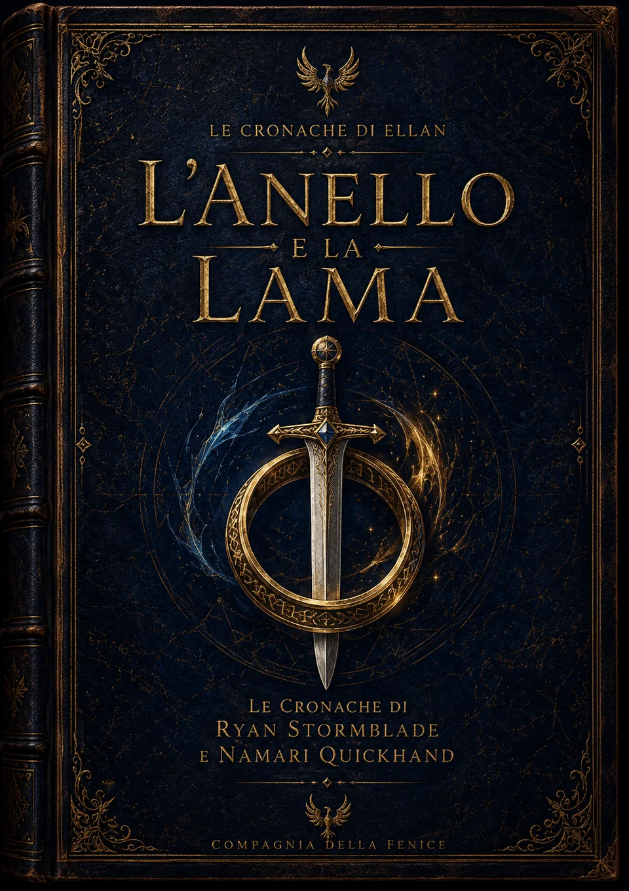
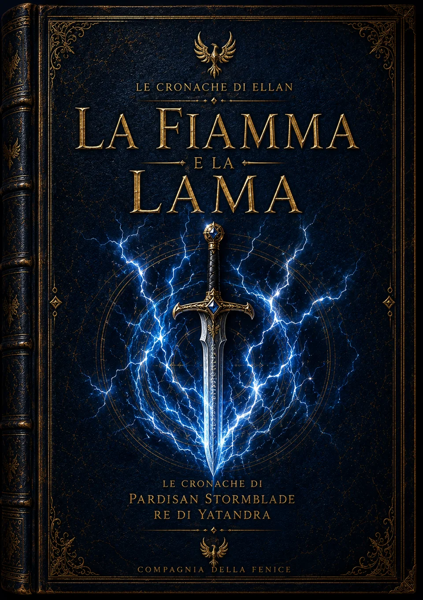
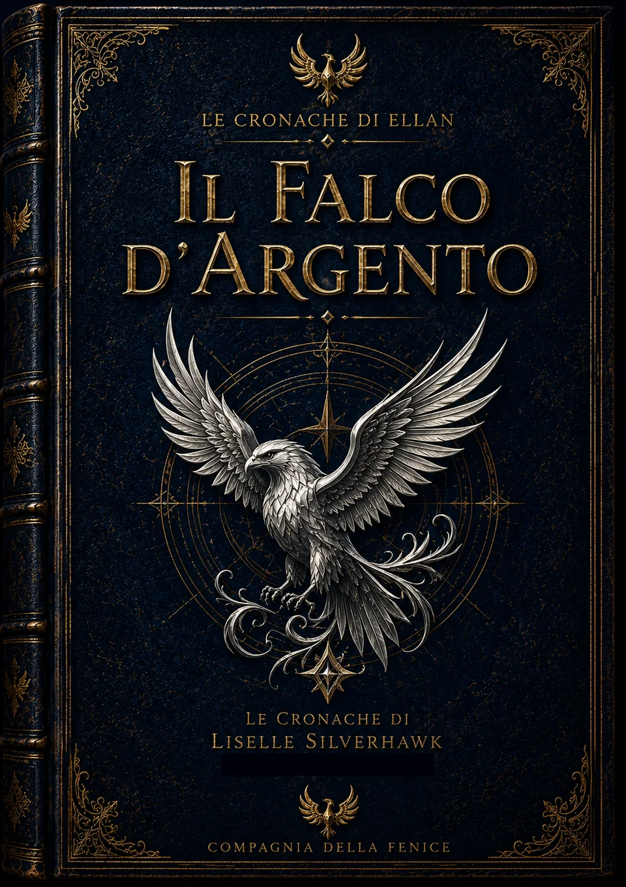

L'Anello e la Lama
La storia del principe Ryan Stormblade e della contrabbandiera Namari Quickhand: un racconto di amicizia, amore, avventura e destino.
📖 Leggi o scarica il PDFStorie, leggende e memorie provenienti dai Reami di Ellan. Alcune sono racconti tramandati dai cronistorici; altre narrano le imprese di personaggi che hanno segnato il destino del mondo. Le storie disponibili si possono leggere gratuitamente.

La storia del principe Ryan Stormblade e della contrabbandiera Namari Quickhand: un racconto di amicizia, amore, avventura e destino.
📖 Leggi o scarica il PDF
Le imprese giovanili di Pardisan Stormblade, prima che diventasse Re di Yatandra.
In preparazione — non ancora disponibile
L'ascesa di Liselle Silverhawk e il cammino che la portò al trono.
In preparazione — non ancora disponibile